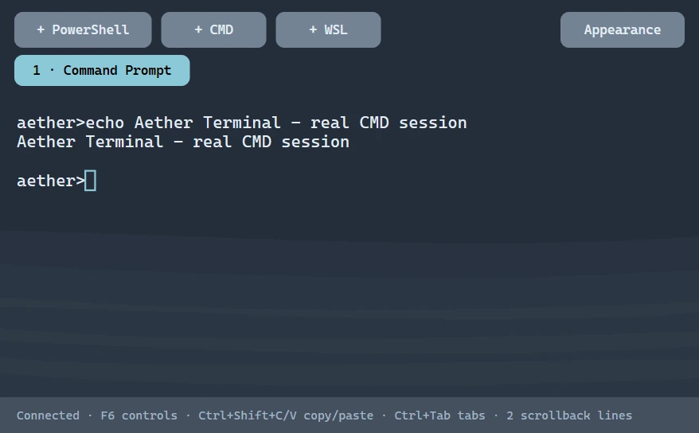
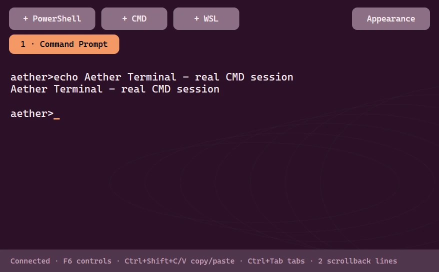
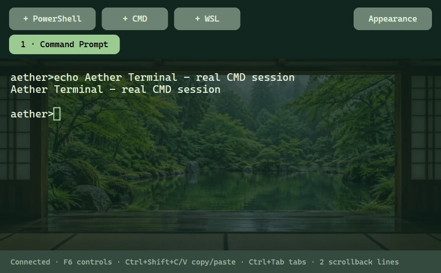
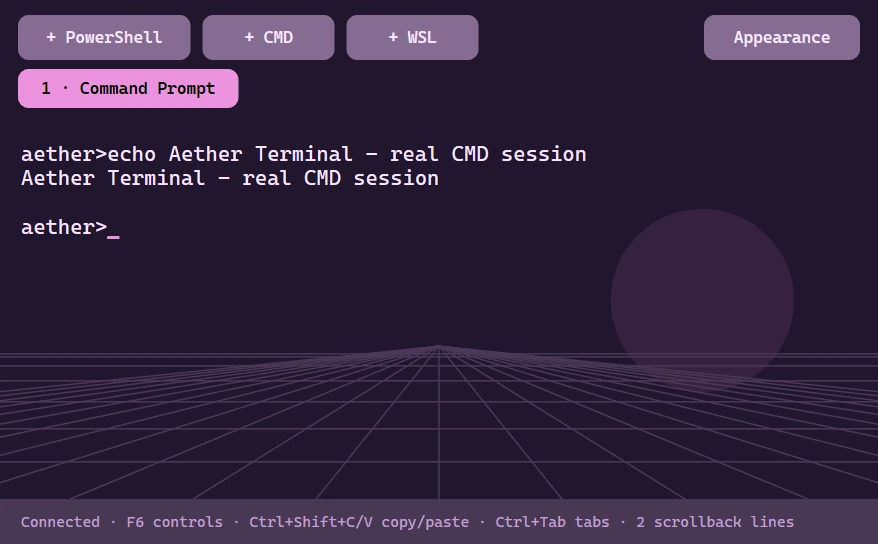
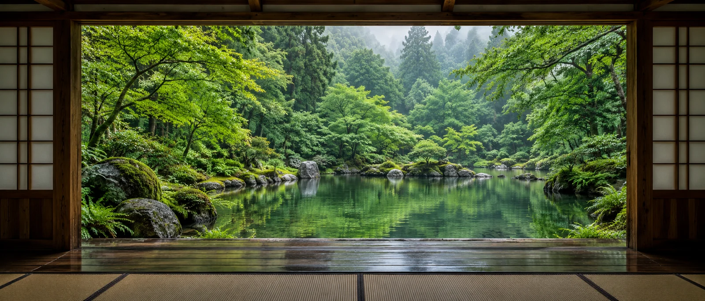

01 / The problem
Freedom can become friction.
A deeply customized desktop needs to remain understandable: where to switch windows, which monitor a control affects, when a layout is editable, and how to return to the familiar Windows desktop.
Native desktop software / Design + engineering
A desktop that feels personal. An Ubuntu-inspired Windows experience with clearer window navigation, flexible panels and a studio for making the workspace your own.

Built, not just a composition
Aether Terminal runs real shells with coordinated fonts, colors and backgrounds. Eleven focused Desktop Studio sections bring tools, typography, panel styles, widgets and presets together.
This is an actual application capture. The project remains a preview; validation is scoped to the tested Windows desktop and documented scenarios.
01 / The problem
A deeply customized desktop needs to remain understandable: where to switch windows, which monitor a control affects, when a layout is editable, and how to return to the familiar Windows desktop.
02 / Interaction direction
Ubuntu/GNOME and Seelen UI informed the navigation and customization direction. Aether implements its own native C++ surfaces: a fullscreen Activities overview, grouped window previews, monitor filters and workspace organization.
03 / Personalization
04 / Editing affordances
Widgets start locked. Editing exposes grid snapping and resize grips. Lost-button/capture cancellation and Escape restore unfinished gestures. Native rounded clipping follows the selected radius and resized window bounds.
Wallpaper scenes now distinguish physical monitor changes from usable-work-area changes, avoiding scene resets when a dock reveals itself.
05 / Native implementation
Win32 provides windowing and desktop integration; Direct2D and DirectWrite render the interface. Explorer stays running. Optional taskbar hiding uses a separate recovery process, a five-second lease and an emergency restore shortcut.
06 / Resource discipline
A 15-second saved-profile root observation measured 0.104% of one logical CPU and 152.20 MiB private memory with Studio closed. Helpers, DWM, GPU and frame pacing were excluded; this short observation is not a long-duration benchmark.
Animation pauses under reduced motion, battery or monitor coverage rules. Icon previews request visible rows rather than loading every pack into view at once.
A coordinated native toolset
PowerShell, Command Prompt and installed WSL distributions run through Windows ConPTY. Ten stock designs pair a readable palette with quiet static artwork; local images, monospace fonts, cursor styles and tint make each session personal. Applying a design keeps the shell running.




These are captures of the native running terminal with an owned test shell. Stock themes are original Aether interpretations informed by GNOME Terminal, Dracula, Nord, Catppuccin, Tokyo Night, Gruvbox, Solarized, One Dark and SynthWave. Research sources and terminal limits.
Settings architecture
Eleven focused sections separate colors, wallpapers, fonts, bar styling, displays, pinned apps, icons, Windows integration, Terminal, widgets and recovery. The sidebar adapts to short windows. Native accessibility checks verify that visible interactive controls do not overlap.
Native integration
Aether Files browses local folders, while optional Windows theme and accent sync coordinates supported applications. Per-app frame rules and owned Windows Terminal fragments preserve existing defaults. A journal restores the values Aether owns.

Local Windows validation
These are recorded local results, not independent usability research or a guarantee across every Windows configuration.
What still needs work
Complex terminal glyphs, IME, full xterm emulation and terminal screen-reader support remain unfinished. Aether Files currently browses and opens local files; mutation and network browsing remain open. Broader Windows-version, mixed-DPI, GPU and long-duration testing remain open. Final taskbar and shutdown results are recorded in the linked validation report.
Read validation details ↗This project connects visual systems, native rendering, multi-monitor state, explicit editing modes, recovery and measured resource use in a working desktop application.
View Aether UI on GitHub ↗Icon artwork is credited to its upstream projects. Sources and license notices accompany the bundled assets and the icons visible in this capture.
Next level / Let’s work together